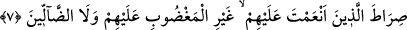

7.“Nimet verdiklerinin yoluna; gadaba uğramış olanların ve sapıtmış olanların
yoluna değil.”
“İn’âm” nimeti yerine ulaştırmak demektir. Aslında o da insanın tad aldığı bir
durumdur. Nimet, hak dinden tad alınan şeye denir.
Ebu’l-Abbas ibn Atâ der ki: “Kendilerine nimet verilenler tabaka tabakadır. Ârifler:
Allah’ın kendilerine ma’rifet nimetiyle ikramda bulunduğu kimselerdir. Velîler: Sıdk
(doğruluk), rızâ (hoşnudluk), yakîn ve safvet sıfatı verdiği kimselerdir. Ebrâr: Hilim
(yumuşaklık) ve re’fet (merhamet) sıfatı ihsân buyurduklarıdır. Mürîdler: Tâat lezzeti
in‘âm ettikleridir. Mü’minler: İstikamet verdikleridir.
Denilmiştir ki: Allah’ın nimet verdiklerinden maksad nebîler, sıddîklar, şehîdler ve
sâlihlerdir. Nitekim Allah Teâlâ buyurur: “İşte onlar Allah’ın kendilerine nimet
ihsân ettiği peygamberler, sıddîklar, şehîdler ve sâlihlerle beraber olacaklardır.”
(en-Nisâ, 4/69) Bu âyette Allah Teâlâ, sıratı kullarına izâfe etti. Şu âyette de Rab’den
kuluna gelen yol mânâsına zâtına izâfe etmiştir: “Bu benim dosdoğru yolumdur.” (el-
En’âm, 4/153) Nitekim şu âyetlerde de din ve hidâyet, Allah’a izâfe edilmiştir:
“Allah’ın dîninden başkasını mı arzu ediyorlar?” (Âl-i İmrân, 3/83) “Allah’ın
hidâyeti, hidâyetin ta kendisidir.” (el-Bakara 2/120) Din ve hidâyet bâzan da şu
âyetlerde olduğu gibi kullara izâfe edilmiştir: “Ben bugün sizin dîninizi
tamamladım.” (el-Mâide, 5/3) “Sen de onların hidâyetine iktidâ et, yoluna uy!” (el-
En’âm, 6/90)
Hidâyet ve din kavramlarının bâzan Allah’a, bâzan da kullara izâfetle söylenmesinin
bâzı incelikleri ve sırları vardır. Onlardan bazıları şunlardır:
1- Din ve hidâyet, Allah’ın koyduğu bir kanun ve bizim yararımıza bir müessesedir.
Nitekim: “O dîni Allah size de din kıldı.” (eş-Şûrâ, 42/13)
2- Din Allah’a göre O’nun tarafından konulan bir kanun, bize göre de uyulması
gereken bir usûldür.
3- Allah, dîni zâtına izâfe etmiştir ki, kul kendini beğenme hastalığından kurtulsun,
kula izâfe etmiştir ki, bu sûretle kulun kalbi mütesellî olsun.
4- Allah, kullarının şânını yüceltmek ve onları zâtına yakın kılmak için din kelimesini
kullara; İblîs din işine karışmasın diye de kendisine izâfe etmiştir. Nitekim: “İzzet ve
şeref Allah’ın, Rasûlü’nün ve mü’minlerindir.” (el-Münâfikun, 63/8) âyeti nâzil
olduğunda şeytanın şöyle dediği nakledilir: “Allah ve Rasûlü’nün izzet ve şerefini
söküp almaya muktedir olmasam da, mü’minlerin izzetini söker alırım.” Şeytanın bu
sözü üzerine Allah Teâlâ: “İzzetin her türlüsü Allah’a âiddir.” (en-Nisâ, 4/139)
buyurarak şeytanın bu arzudan ümidini kesmiştir. Nitekim et-Teysîr’de böyle
anlatılmıştır.
“Sırat” kelimesinin peşpeşe iki defa geçmesi, birinin kuldan Rabb’a, diğerinin